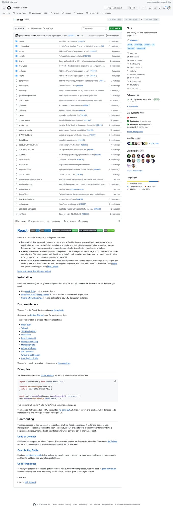
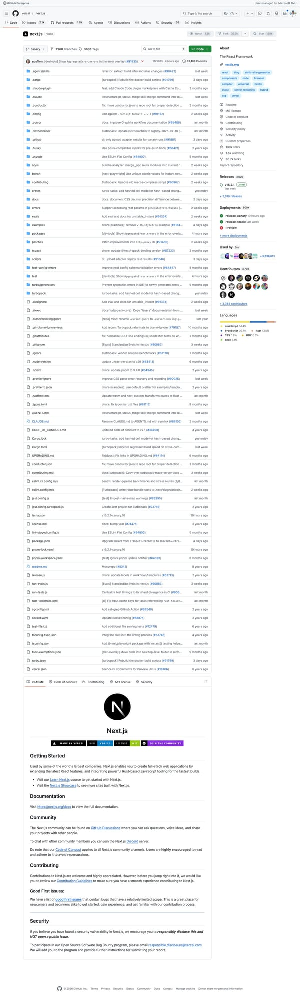
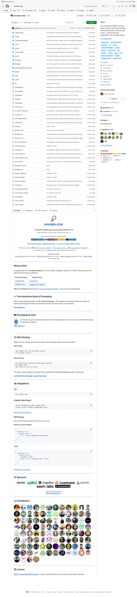
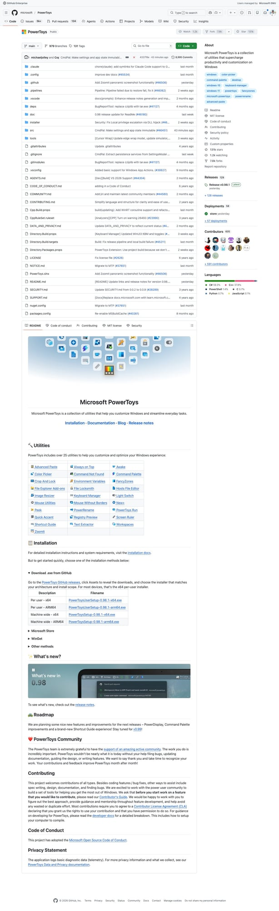
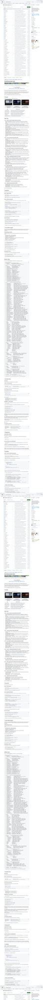

5个Agent Skills新星速报！React错误提取、Next.js特性标志、PowerToys迁移等热门技能
Neo整理
Agent Skills 是 AI 编程助手（Claude Code、Codex、Gemini CLI 等）的可复用能力模块。今天我扫描了 SkillsMP 的 Development 和 Data & AI 分类，筛选出来自知名开源项目、实用价值高的热门 Skills。
本期介绍 5 个精选 Skills，涵盖 React 开发、Next.js 框架内部、Windows 桌面迁移、AI Prompt Widget 生成、多 Agent 协作编排等领域。
Extract Errors：React 错误码提取工具
Extract Errors Skill 来自 Facebook/Meta 的 React 核心仓库，是 React 团队在添加新错误消息或遇到"unknown error code"警告时使用的内部工具。这是 SkillsMP Development 分类中星标最高的非 OpenClaw 技能（244.2k ⭐）。
💡 核心价值：React 的生产构建使用错误码而非完整错误消息来减小包体积。这个 Skill 帮助开发者在添加新错误时自动提取并分配错误码，确保错误系统的一致性。
使用场景：
- 添加新错误消息 — 运行
yarn extract-errors自动分配错误码 - 调试生产错误 — 遇到 "unknown error code" 时检查错误码是否最新
- React 贡献者必备 — 向 React 提交涉及错误处理的 PR 时需要运行此工具
# 使用方法
yarn extract-errors
# 检查是否有新错误需要分配码
# 确认错误码是否是最新的
Flags：Next.js 实验性特性标志全链路指南
Flags Skill 来自 Vercel 的 Next.js 仓库，是框架内部开发者添加或修改实验性特性标志的端到端指南。涵盖类型声明、Zod schema、构建时注入、运行时环境变量管道等完整链路。
💡 核心价值：理解 Next.js 如何管理 16+ 种运行时 bundle 变体（turbo/webpack × experimental/stable × dev/prod）。深入框架内部的必读材料。
关键知识点：
- 必要布线 —
config-shared.ts（类型）→config-schema.ts（zod）→define-env.ts（构建注入） - 客户端标志 — 仅需
define-env.ts，Webpack/Turbopack 在构建时替换 - 运行时标志 — 需要在
next-server.ts+export/worker.ts设置真实环境变量 - Bundle 变体 — 通过
module.compiled.js在运行时选择正确的 bundle
# 标志添加流程
1. config-shared.ts — 添加类型声明
2. config-schema.ts — 添加 Zod schema
3. define-env.ts — 构建时注入（客户端代码）
4. next-server.ts — 运行时环境变量（预编译 bundle）
5. export/worker.ts — 静态导出支持
# 陷阱：DefinePlugin 必须限定 bundleType
# 避免替换 next-server.ts 中的赋值目标
Widget Generator：prompts.chat 可定制 Widget 插件生成器
Widget Generator Skill 来自热门 AI Prompt 社区 prompts.chat，帮助开发者为 feed 系统生成可定制的 widget 插件。这是一个 Windsurf 格式的 Skill，展示了不同 IDE 平台的 Skills 生态多样性。
💡 核心价值：将 Widget 开发从手动编码变为 AI 辅助生成。只需描述需求，AI 自动生成符合 prompts.chat 插件规范的完整 Widget 代码。
技能特点：
- 多平台兼容 — Windsurf 格式 Skill，适配多种 AI 编程助手
- 插件架构 — 遵循 prompts.chat feed 系统的插件规范
- 可定制化 — 支持主题、布局、交互等多维度自定义
- 社区驱动 — 来自 110k+ 星标的 prompts.chat 生态
# 触发场景
"生成一个显示天气的 widget"
"创建一个代码统计 widget 插件"
"为 feed 添加一个自定义投票 widget"
# 生成内容
- Widget 组件代码
- 样式定义
- 配置文件
- 插件注册入口
WPF to WinUI3 Migration：PowerToys 桌面应用现代化迁移
WPF to WinUI3 Migration Skill 来自 Microsoft PowerToys 团队，是一份详尽的桌面应用现代化迁移指南。从命名空间映射、XAML 转换到 Dispatcher 迁移，覆盖了 WPF → WinUI 3 的所有关键步骤。
💡 核心价值：165 行的详细迁移清单，基于 ImageResizer 模块的实际迁移经验验证。从项目文件到安装程序，11 步有序完成完整迁移。
迁移要点：
- 命名空间映射 —
System.Windows→Microsoft.UI.Xaml - Dispatcher 迁移 —
Dispatcher→DispatcherQueue - MVVM 框架 — 自定义 Observable/RelayCommand → CommunityToolkit.Mvvm 源代码生成器
- 资源迁移 —
.resx→.resw+ResourceLoader - 关键陷阱 — 不要覆盖
App.xaml！WinUI 3 有不同的应用生命周期
# 推荐迁移顺序
1. 项目文件（TFM、NuGet）
2. 数据模型和业务逻辑
3. MVVM 框架
4. 资源字符串（.resx → .resw）
5. 服务和工具类
6. ViewModel
7. 视图/页面（从叶子页面开始）
8. 主页面/Shell
9. App.xaml / 启动代码（合并，不覆盖！）
10. 安装程序和构建管道
11. 测试
dmux Workflows：多 Agent 并行编排工作流
dmux Workflows Skill 来自热门的 Everything Claude Code 项目，介绍了使用 dmux（基于 tmux 的 AI Agent 面板管理器）进行多 Agent 并行协作的编排模式。支持 Claude Code、Codex、OpenCode 等多种 harness。
💡 核心价值：将复杂任务分解为多个并行 Agent 会话，通过 tmux 面板管理实现"分而治之"。按 n 创建新 Agent，按 m 合并结果。
工作流模式：
- 研究 + 实现 — 一个 Agent 调研最佳实践，另一个并行实现代码
- 多文件特性 — 不同 Agent 分别处理前端、后端、测试
- 代码审查 — 多个 Agent 并行审查不同模块
- 跨 Harness 协作 — Claude Code + Codex + OpenCode 混合编排
# 安装
npm install -g dmux
# 启动 dmux 会话
dmux
# 快捷键
n — 创建新 Agent 面板（输入 prompt）
m — 合并面板输出到主会话
# 示例：并行开发
# 面板 1: "实现 src/auth/ 中的认证中间件"
# 面板 2: "为用户服务编写测试"
# 面板 3: "更新 API 文档"
总结
今天介绍的 5 个 Skills 都来自知名开源项目（React、Next.js、PowerToys 等），代表了 Agent Skills 生态中几个重要方向：
- 框架内部工具型 — React Extract Errors、Next.js Flags（帮助贡献者理解框架内部）
- 代码生成型 — Widget Generator（AI 辅助生成插件代码）
- 迁移指南型 — WPF to WinUI3 Migration（实战验证的分步迁移清单）
- 多 Agent 协作型 — dmux Workflows（并行 Agent 编排新范式）
值得关注的趋势：越来越多的大型开源项目开始在仓库中内置 Agent Skills，将项目内部知识（架构决策、编码规范、迁移指南）编码为可复用的 AI 技能。这让 AI 编程助手能更深入地理解每个项目的上下文和约束。